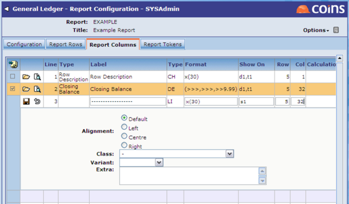

You can choose the text style (for example: typeface,
You can also use additional formatting on individual rows or columns.
You can apply standard Progress formatting to a column on the report to control, for example, the width of the column or how numbers are displayed. Enter the format in the Format field on the column.
Standard text lines allow you to insert underlining etc. into the report. This technique is really confined to GL reports that are run in
First, on the Report Rows tab add the standard text lines into the report, at the point in the structure where you wish them to appear.
Then on the Report Columns tab, input what you would like to be displayed on a standard text line.

Note that you can use differing effects with Standard Text Lines by using different 'Levels' in the report. For example, in the example above, you could put single underlines on level 1 (and therefore 'show on' s1) and double underlines on level 2 (and therefore 'show on' s2).